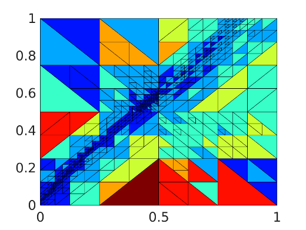

Scalable Hybridized DG and Exponential DG for Fluid Models
Highlight by Tan Bui-Thanh (UT Austin).
Overview
Advanced Tokamak simulations need rigorous high-order accuracy, efficient temporal simulations at desperately different scales.
- We proposed and analyzed a high-order hybridized Discontinuous Galerkin (HDG) framework for MHD system to achieve stable and high-order accuracy in space
- We proposed and analyzed multigrid, multilevel approaches for HDG
- We proposed and analyzed high-order IMEX and exponential time integrators to over time-step limitation due to fast physics
Scalable, high-order HDG-based MHD solver
2D island coalescence using a very high-order HDG scheme. The current sheet breaks into plasmoids.
3D island coalescence using a very high-order HDG scheme. A current sheet is forming in the center of the domain.
3D Kelvin-Helmholtz instability of MHD
Kelvin-Helmholtz instability using IMEX or exponential time integrator
Several Kelvin-Helmholtz instabilities for different models are studied. Two types of time integrators are considered: exponential integrator and IMEX integrators. We are currently extending the proposed schemes to MHD.

hp-adaptive HDG solver
3D Kelvin-Helmholtz instability for Euler equations. An exponential time integrator is used along with a high-order DG scheme.
3D Kelvin-Helmholtz instability for shallow water equations on a sphere. A IMEX integrator is used along with a high-order HDG-DG scheme.